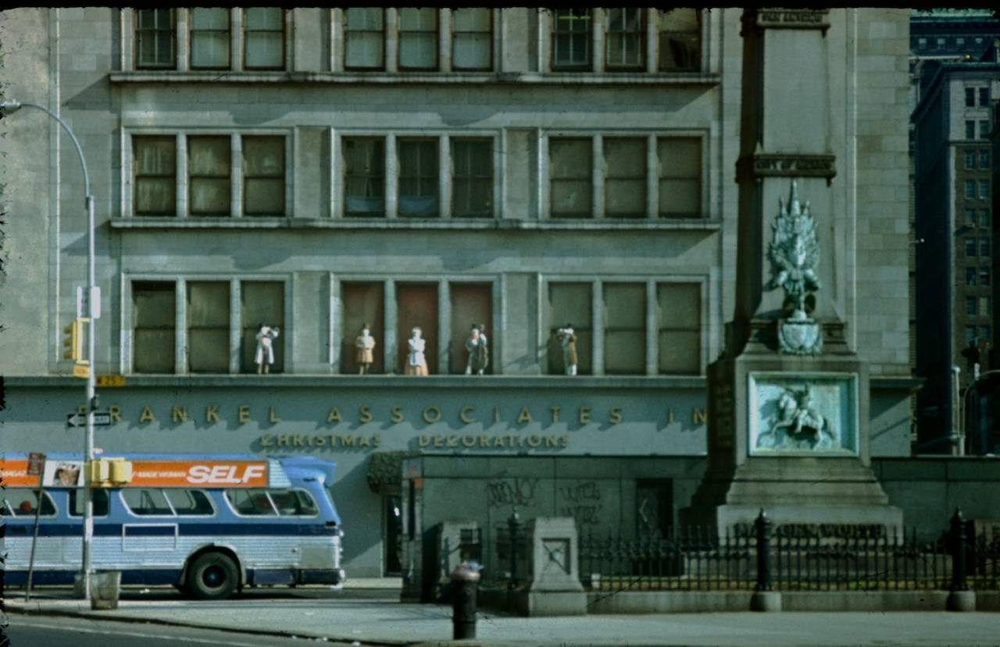
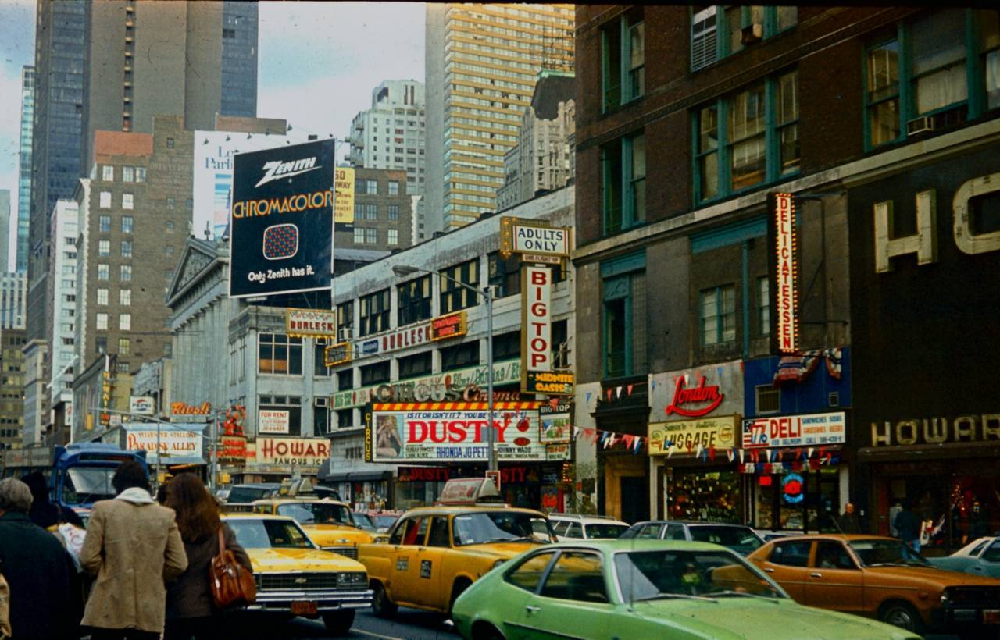
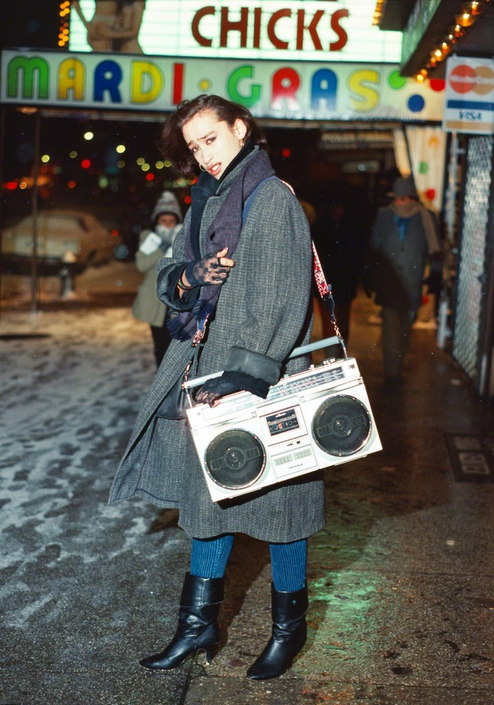
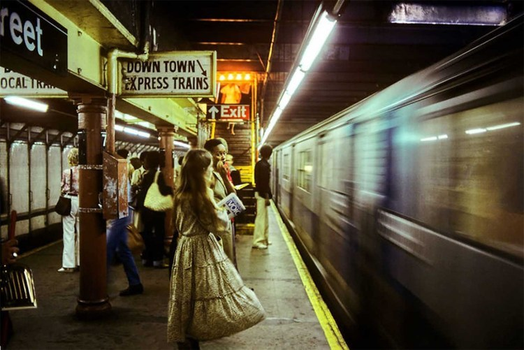
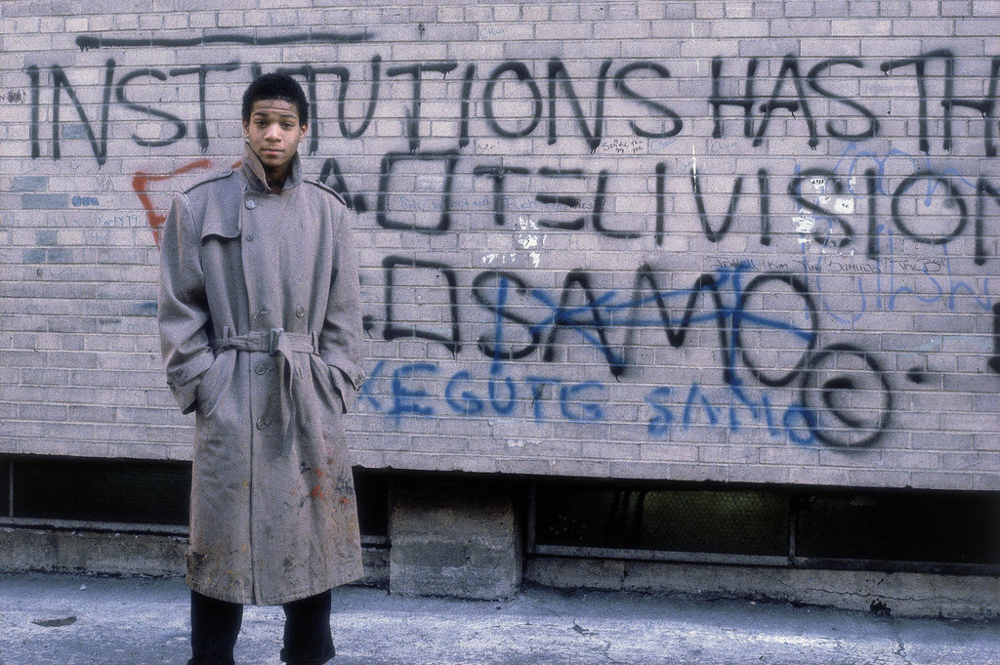
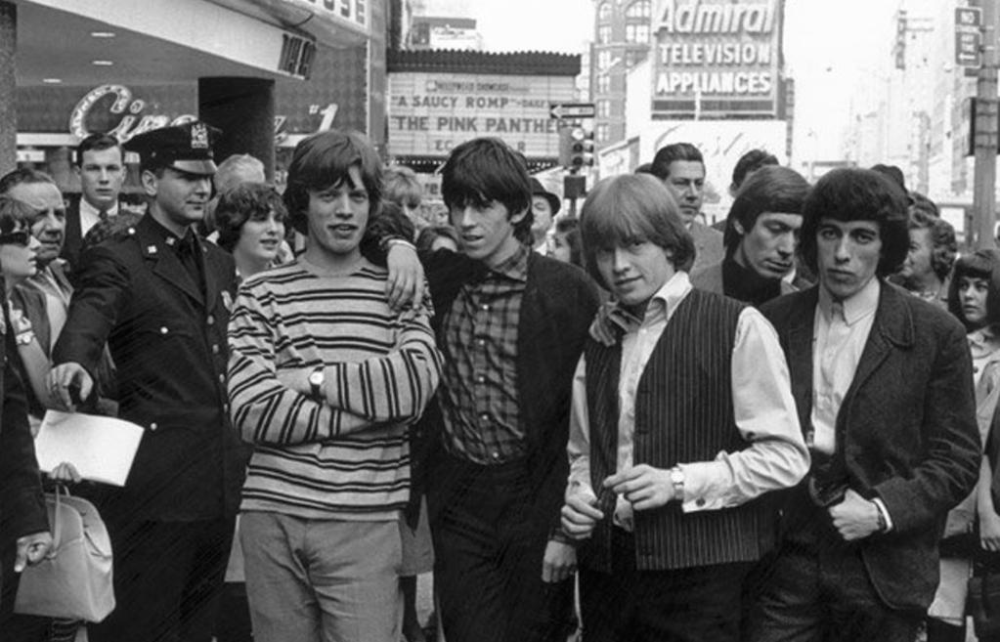
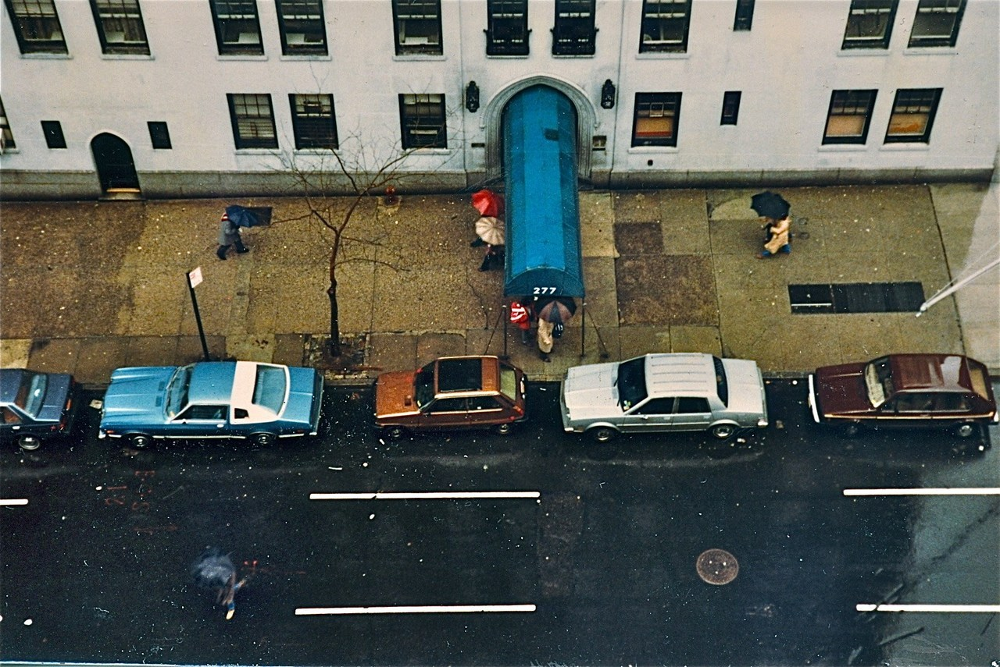
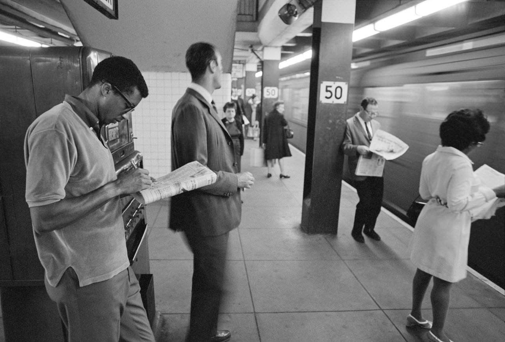
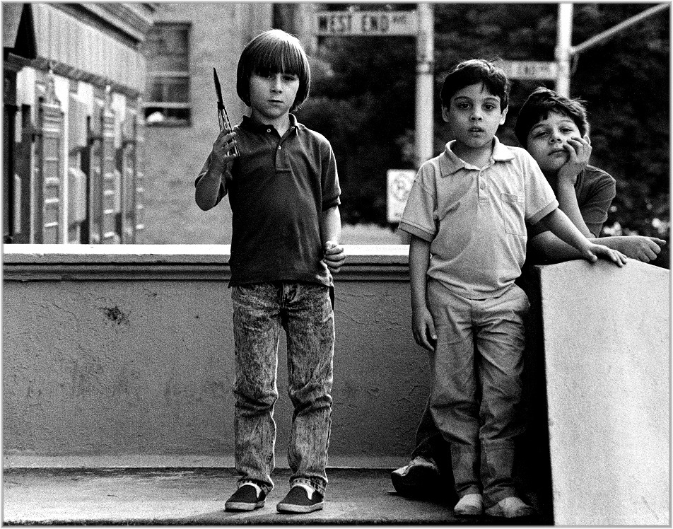

Garment District in the 1960s

Early graffiti
Garment District in the 1960s
Early graffiti
Alice in Wonderland statue in Central Park

5th Ave in 1965

Broadway and 88th, 1974

I didn’t realize the benches in the middle of Broadway were ever this numerous! It’s like a damn amphitheater.

Bolivar Arellano Nuyorican Poets Miguel Piñero and Sandra Maria Esteves on the Subway, New York City 1977
Juan: Someday I’m gonna be walking down the streets minding my own business and BAM! I’m gonna be shot by some pig, who’s gonna swear that it was a mistake. I accept that as a part of my destiny.
– Miguel Piñero, “Short Eyes” 1974

25th Street, 1978

Times Square, 1978

Sting jogging in 1978

Broadway between W48th and W49th, ca. 1985
Photo by Robin Graubard

Victorian dress and Village Voice in hand, headed downtown

E Tremont Ave in the Bronx

Astoria Queens, 30th Ave and 31st St, 1981

Keith Haring painting a mural at Houston Street and Bowery, 1982

Jean-Michel Basquiat at Mulberry and Bleecker Streets, 1980

Rolling Stones in Times Square, 1964

Harlem, New York, 1985

Lida Moser, The World Trade Center under construction, circa 1971.

Puerto Rico Bodega, 1960

Street theater, 1963
Footage from the 1967 Central Park “Be-In”

Photo by Alan MacWeeney, ca. 1977

West End Ave, circa 1980

125th Street, 1976

Outside the Met, 1976
1979 New Yorkers being interviewed.

Arthur Ashe doing a crossword puzzle while waiting for the subway, completely unrecognized the day after he won the U.S. Open men’s singles championship in September 1968
via reddit

Wiz, Nas, Jungle, 1993

Grandmaster Flash

Coney Island, 1985

Coney Island, 1977
West Broadway, 1978

Tough kid with a butterfly knife, 1988

Urban blight, 1980s

Hell’s Angels in Harlem, 1982

Suzanne Vega in the Village

Suzanne Vega in Tom’s Diner

Sade and co in Alphabet City, 1982

This ain’t no submarine.

Natty

Harlem, 1970s. 125th between Lenox and Fifth, looking East